<div class="top-bar">
    
    <div class="toolbar">
        <div class="toggle"
             pTooltip="Add a module"
             tooltipPosition="left"
             showDelay="1000"
             (click)="isMenuOpen = !isMenuOpen"
             [@toggleAnimation]="isMenuOpen">+
        </div>
        <div class="menu" *ngIf="isMenuOpen" [@menuAnimation]>
            
            
            
            
            
        </div>
    </div>
</div>

<div class="alert-danger" *ngIf="alertLevel == 2"></div>
<div class="container">
    <gridster [options]="options" (change)="onDashboardChange()">
        <gridster-item [item]="item" *ngFor="let item of dashboard">
            <app-gitlab
                    *ngIf="item.component === 'gitlab'"
                    [id]="dashboard.indexOf(item)"
            ></app-gitlab>
            <app-alert-manager
                    *ngIf="item.component === 'alert-manager'"
                    [id]="dashboard.indexOf(item)"
            ></app-alert-manager>
            <app-kubernetes
                    *ngIf="item.component === 'kubernetes'"
                    [id]="dashboard.indexOf(item)"
            ></app-kubernetes>
            <app-grafana
                    *ngIf="item.component === 'grafana'"
                    [id]="dashboard.indexOf(item)"
            ></app-grafana>
            <app-sonarqube
                    *ngIf="item.component === 'sonarqube'"
                    [id]="dashboard.indexOf(item)"
            ></app-sonarqube>
        </gridster-item>
    </gridster>
</div>
